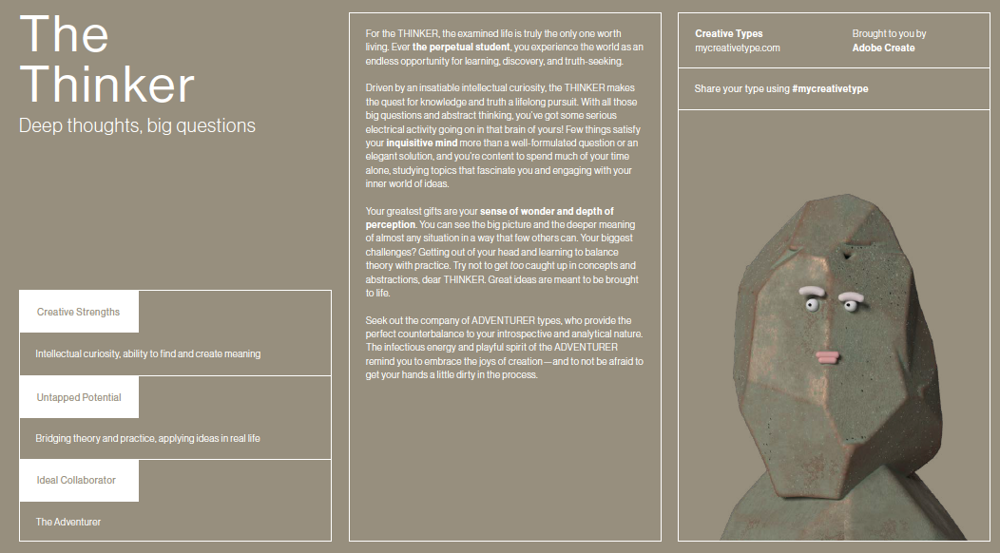

Personal Profile
According to Myer16personalities, I am classed as an 'ADVOCATE' (INFJ-A personality). My personality traits are as follows:
Strengths
- Creative – Advocate personalities enjoy finding the perfect solution for the people they care about. To do this, they draw on their vivid imagination and their strong sense of compassion. This can make them excellent counsellors and advisors.
- Insightful – Advocates typically strive to move past appearances and get to the heart of things. This can give them an almost uncanny ability to understand people’s true motivations, feelings, and needs.
- Principled – People with the Advocate personality type tend to have deeply held beliefs, and their conviction often shines through when they speak or write about subjects that matter to them. Advocates can be compelling and inspiring communicators, with their idealism persuading even the hardest of sceptics.
- Passionate – Advocates can pursue their ideals with a single-mindedness that may catch others off guard. These personalities rarely settle for “good enough,” and their willingness to disrupt the status quo may not please everyone. That said, Advocates’ passion for their chosen cause is a key aspect of their personality.
- Altruistic – Advocates generally aim to use their strengths for the greater good – they rarely enjoy succeeding at other people’s expense. They tend to think about how their actions affect others, and their goal is to behave in a way that will help the people around them and make the world a better place.
- Sensitive to Criticism – When someone challenges their principles or values, Advocates may react strongly. People with this personality type can become defensive in the face of criticism and conflict, particularly when it comes to issues that are near to their hearts.
- Reluctant to Open Up – Advocates value honesty, but they’re also private. They may find it difficult to open up and be vulnerable about their struggles. This might also be because they think they need to solve their problems on their own or don’t want to burden other people with their issues. When Advocates don’t ask for help, they may inadvertently hold themselves back or create distance in their relationships.
- Perfectionistic – The Advocate personality type is all but defined by idealism. While this is a wonderful quality in many ways, an ideal situation is not always possible. Advocates might find it difficult to appreciate their jobs, living situations, or relationships if they’re continually fixating on imperfections and wondering whether they should be looking for something better.
- Avoiding the Ordinary – Advocate personalities tend to be motivated by a sense of having a greater purpose in life. They might consider it tedious or unnecessary to break their big visions into small, manageable steps. But they may be setting themselves up for frustration if they don’t turn their dreams into everyday routines and to-do lists. Without these specifics, their goals may never materialize.
- Prone to Burnout – Advocates' perfectionism and reserve may leave them with few options for letting off steam. People with this personality type can exhaust themselves if they don’t find a way to balance their drive to help others with necessary self-care and rest.
Weaknesses
The strengths I agree with, but the weaknesses aren’t quite me in a professional capacity, but results from these types of tests are often subjective and should only be taken as a general overview of person’s personality at the time of taking the test. As the person evolves and grows so will the test results. These tests can be a good guide to understanding the needs of each personality within a team setting and help attract the right balance for successful dynamics. They can also help to lessen the chances of attracting unhealthy, conflicting personalities that may jeopardise the success of the team’s outcomes.
source:
https://www.16personalities.com/infj-personalityLearning Style Profiles
I took two different learning style profiles. My results are as follows:
According to 'how-to-study.com', I am a 'Visual' Learner and according to 'chegg.com', I am an 'Auditory' Learner.
I somewhat agree with these results. I tend to learn quicker if I can see something rather than just by hearing about it but I personally, believe that I'm actually a 'Kinesthetic' learner. I learn quicker if I can do the task. If I know the 'why' and 'how' of something, I pick it up very quickly. I think it's important to be mindful of each team members learning type to avoid setting members up to fail and/or miscommunication around the requirements of project tasks.
sources:
https://www.how-to-study.com/learning-style-assessment/https://www.chegg.com/play/student-life/quiz-what-type-of-learner-are-you/
Creative Profile
According to 'mycreativetype.com, I am a 'Thinker'. My results are below:
I agree with these results. I am one who thinks deeply about life and my place in it, and I like to know the ins and outs of something. The "Why". I like to think that I'm a creative type. I enjoy creative writing and making and editing short films. I wouldn't say I'm gifted or an artist. I do believe that the "creative" tag is misused and mostly given to those who can paint, sculpt, draw etc. but running a business, managing teams, communicating effectively, are all forms of creativity. Being innovative within a business setting requires creativity.
source:
https://mycreativetype.com/